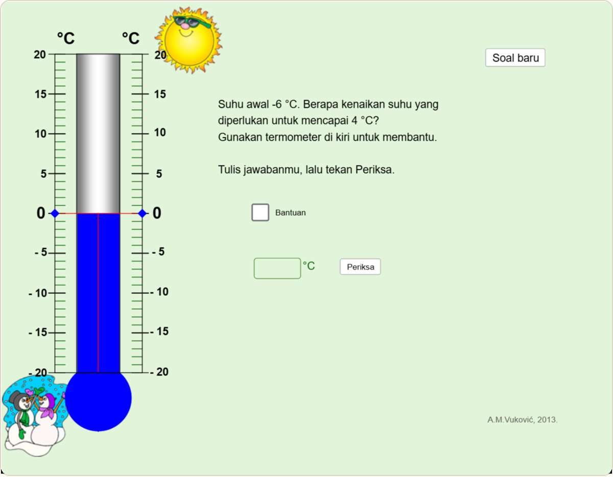
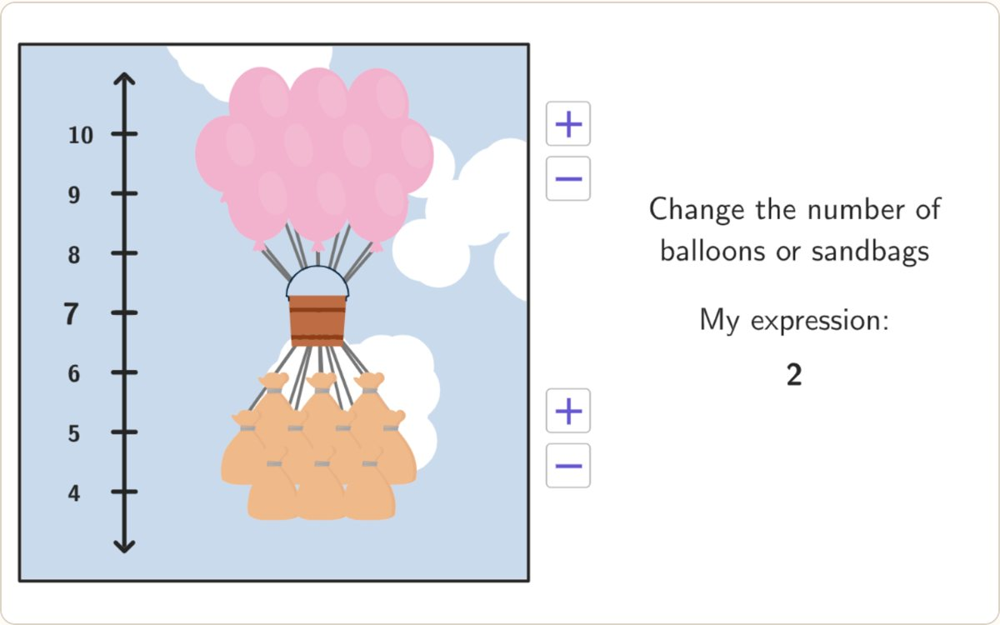
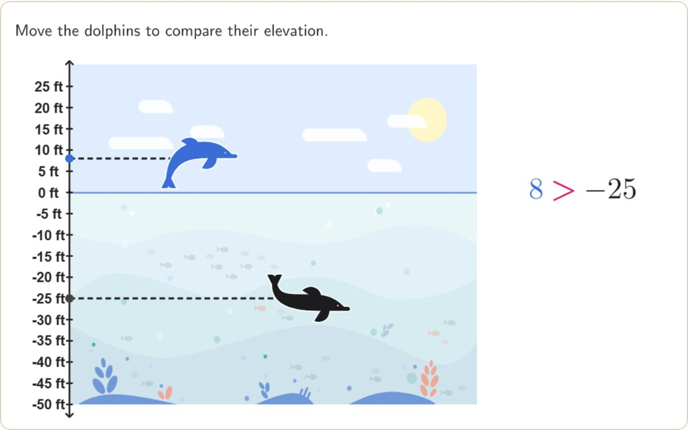
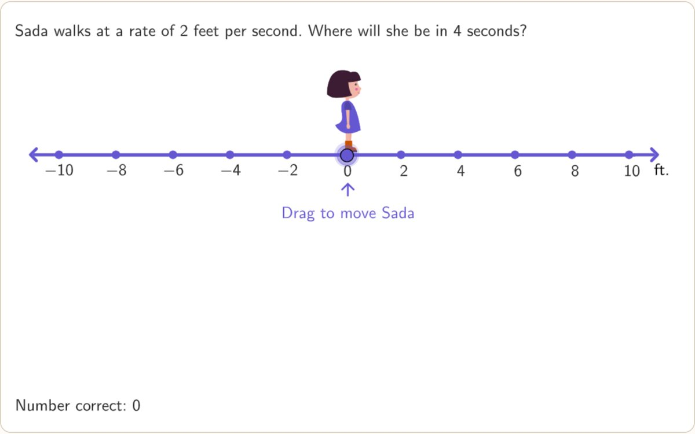
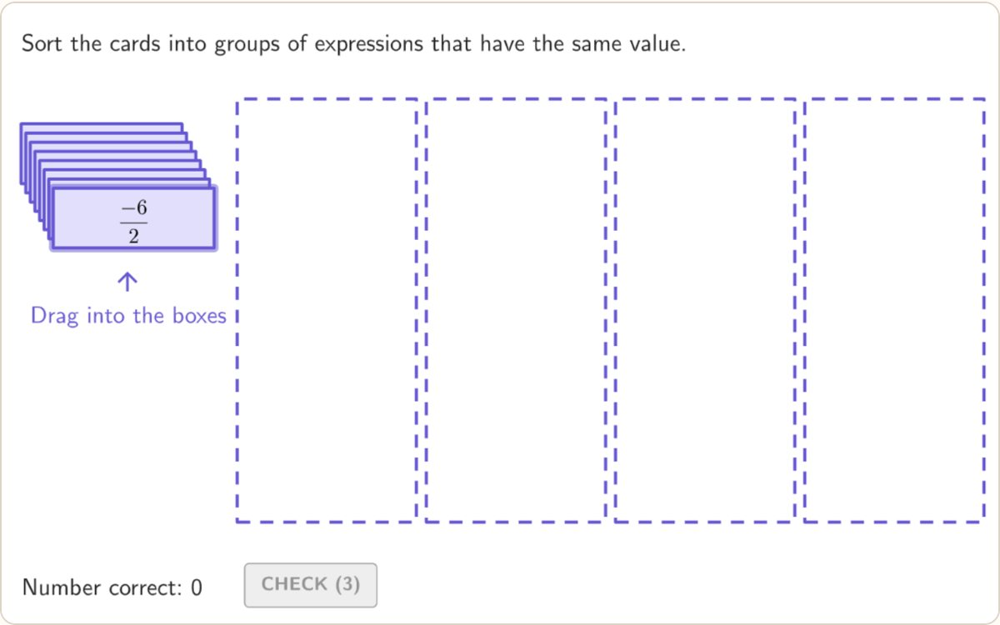
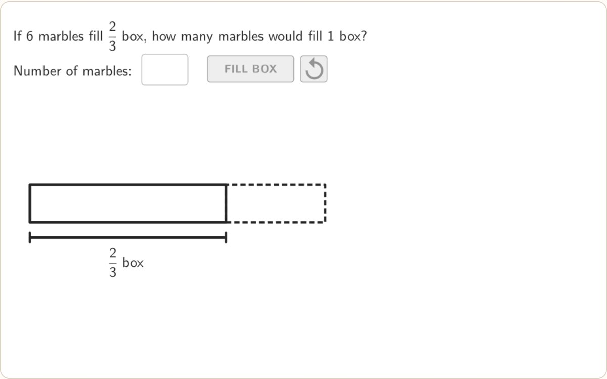
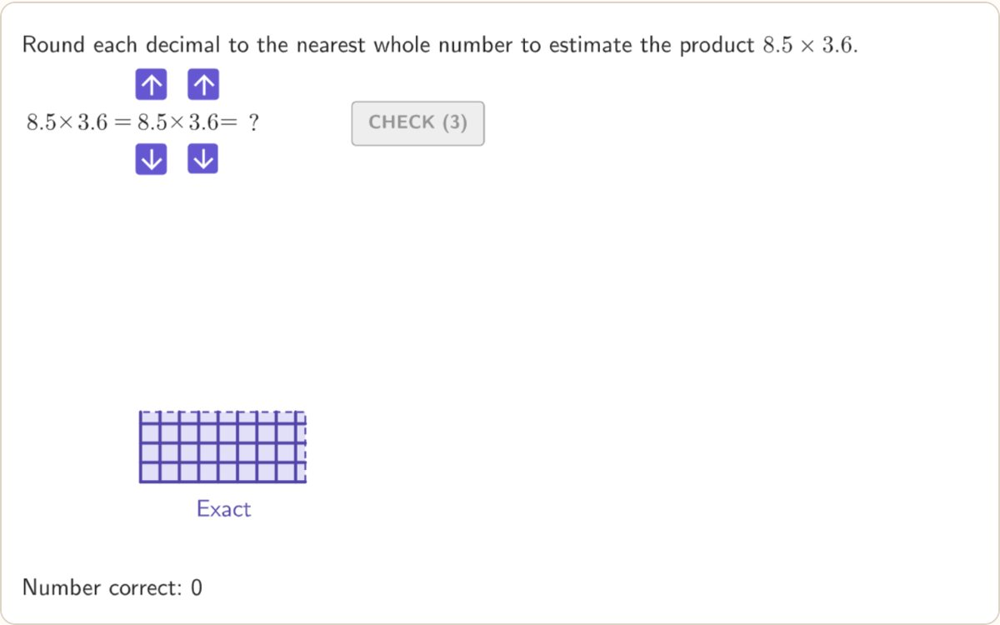

GeoGebra · KI-Tutor · mathematisches Denken
Der Tutor, der zurückfragt.
Die Lernenden bearbeiten eine Aufgabe in einem GeoGebra-Applet. Poda, der KI-Tutor von Gorga, verrät nicht die Lösung. Er fragt, zeigt auf eine Stelle am Bildschirm und wartet, bis die Lernenden ihren Gedankengang selbst finden und erklären.
Die Aktivitäten selbst sind derzeit auf Englisch und Indonesisch verfügbar.
- L1–L4Scaffolding-Stufen der Lehrkraft
- Nichts verratenjeder KI-Satz wird vorher geprüft
- CSVProtokoll pro Zug für die Forschung
IEin Gespräch
Die Schülerin findet die Null selbst.
Aufgabe: Die Temperatur liegt bei −6 °C. Um wie viel muss sie steigen, um 4 °C zu erreichen? Die Schülerin hat schon 10 geantwortet, indem sie einzeln gezählt hat. Das Protokoll verbietet dem Tutor, die Null zu nennen. Achten Sie darauf, wie Poda sie dorthin führt.
Schülerinalso von -6 hoch auf -5, dann -4, dann -3, -2, -1, dann 0. Dann weiter auf 1, 2, 3 und zum Schluss 4.
PodaDu bist von -6 über -5, -4, -3, -2, -1 bis 1, 2, 3 und 4 gegangen. Was passiert, wenn du eine bestimmte Temperatur vor der 1 überquerst?L4
Schülerinach, erst bei null anhalten
PodaDu hältst zuerst bei null an. Wie zählst du den Anstieg von -6 bis 0 und dann von 0 bis 4?L4
Schülerinvon -6 bis 0 steigt es um 6
PodaVon -6 bis 0 steigt es um 6. Um wie viel steigt es dann von 0 bis 4, und wie ergibt das den ganzen Anstieg?L1
Schülerindann noch 4, also 10
PodaDeine Antwort stimmt. Du hast den Anstieg in zwei Teile zerlegt: von -6 bis 0 steigt es um 6 Grad, dann von 0 bis 4 um 4 Grad, zusammen 10 Grad.
IIDas Protokoll der Lehrkraft
Hilfe steigt beim Feststecken, sinkt beim Erfolg.
Poda folgt dem Scaffolding-Rahmen der Lehrkraft. Es beginnt mit einer Diagnose, gibt erst dann mehr Unterstützung, wenn die Lernenden nicht weiterkommen, und zieht sie wieder zurück, sobald sie ihren Gedankengang erklären. Die Lösung muss trotzdem von den Lernenden kommen.
-
L1 · Probe
Erkunden
Eine offene Frage, um zu sehen, was die Lernenden bemerken, tun oder denken. Noch wird nichts gezeigt.
„Was fällt dir an der Lage von −6 und 4 auf dem Thermometer auf?“
-
L2 · Point
Zeigen
Lenkt den Blick auf ein wichtiges Merkmal im Applet, ohne zu sagen, was es bedeutet.
„Schau auf −6 und 0 am Thermometer. Wo liegt −6 im Vergleich zu 0?“
-
L3 · Focus
Fokussieren
Verkleinert die Aufgabe auf eine einzige beantwortbare Teilfrage, ohne das Verfahren zu verraten.
„Zuerst: Von −6 °C bis 0 °C, um wie viel Grad steigt es?“
-
L4 · Revoice & fade
Erklären, dann loslassen
Nach dem Erfolg erklären die Lernenden ihren Gedankengang am Applet. Poda bestätigt ohne neue Erklärung, dann wird die Hilfe zurückgenommen.
„Erkläre jetzt am Thermometer, warum es insgesamt um 10 °C steigt.“
Rahmen: van de Pol, Volman & Beishuizen (2010); van de Pol & Elbers (2013); Wood, Bruner & Ross (1976).
- Nichts verratenJeder KI-Satz wird geprüft: Zahlen, die die Lernenden noch nicht gefunden haben, dürfen nicht vorkommen.
- Inhalt statt EtikettDie Prüfung liest, was der Satz sagt. Ein „L4“, das die Aufgabe doch zerlegt, wird abgelehnt.
- Immer ein ErsatzBricht die KI eine Regel, erhalten die Lernenden einen Satz aus dem Skript, den die Lehrkraft freigegeben hat.
IIISo funktioniert es
Drei Schritte im Unterricht.
Nichts zu installieren. Die Lernenden öffnen einen Link auf dem Laptop oder Tablet.
- 1
Im Applet arbeiten
Markierungen im GeoGebra-Applet verschieben, eine Antwort eintippen, Prüfen drücken. Poda liest Antwort und Markierungen direkt aus dem Applet.
- 2
Den eigenen Weg erklären
Poda bewertet nicht. Er fragt, wie die Lernenden darauf gekommen sind, in ihren eigenen Alltagsworten.
- 3
Selbst finden
Schritt für Schritt, bis der Zielgedanke erscheint. Der Weg wird als Motiv unter dem Applet gezeichnet.
IVFür Lehrkräfte und Forschende
Jeder Zug wird festgehalten.
- Lehrkraft-ModusDie Stufe L1–L4 an jeder Antwort und eine Markierung bei Antworten, die die KI lesen musste.
- SitzungsübersichtAnzahl der Züge, Verteilung der Stufen, KI-Antworten im Vergleich zum Skript und die Zeit bis zum Zielgedanken.
- Protokoll und TranskriptCSV pro Zug für die Auswertung herunterladen oder das Gespräch als Transkript kopieren.
- Speicherung pro Klasse nächste PhaseKlassencodes, Daten werden für die Forschung automatisch gespeichert.
VAktivitäten
Ein Fenster pro Thema.
Die Aktivitäten sind in Fenstern gruppiert. Das Fenster „Ganze Zahlen“ enthält sieben Klimaschutz-Aktivitäten der Lehrkraft. Applets 1 und 2 nutzen das volle Protokoll mit Aufgabenkarten, die anderen das allgemeine Protokoll, bis ihre Aufgabenkarten fertig sind.
-

Volles Protokoll · KITemperaturskala
Temperaturänderungen über 0 °C hinweg vergleichen und berechnen.
Volles Protokoll Die Aufgaben der Aktivität (9) -

Volles Protokoll · KICO₂-Bilanz
Ganze Zahlen addieren mit Ballons (nach oben) und Sandsäcken (nach unten).
-

Allgemeines Protokoll · KIMeeresspiegel
Positive und negative Zahlen für Lagen über und unter dem Meeresspiegel.
-

Allgemeines Protokoll · KINachhaltige Mobilität
Ganze Zahlen multiplizieren über Richtung, Geschwindigkeit und Gehzeit.
-

Allgemeines Protokoll · KIMuster für nachhaltige Entscheidungen
Muster beim Multiplizieren und Dividieren positiver und negativer Zahlen.
-

Allgemeines Protokoll · KIAufforstung planen
Brüche dividieren, um Setzlinge zu planen.
-

Allgemeines Protokoll · KICO₂-Emissionen schätzen
Dezimalprodukte durch Runden und mit einem Flächenmodell schätzen.
Dieses Fenster ist für die nächste Phase vorbereitet. Die Aktivitäten entstehen gemeinsam mit der Lehrkraft.
Über Gorga
Ein Lernort, der führt, statt zu antworten.
Gorga ist eine Forschungsplattform für Mathematikdidaktik in der Sekundarstufe I. Die GeoGebra-Aktivitäten der Lehrkraft werden mit Poda verbunden, einem KI-Tutor, der dem Scaffolding-Protokoll der Lehrkraft folgt: Die Lernenden arbeiten im Applet, erklären ihr Denken und finden den Gedankengang selbst. Lehrkräfte und Forschende erhalten eine Aufzeichnung jedes Zuges.
Der Name stammt von Gorga, der Schnitzkunst an den traditionellen Häusern der Batak in Nordsumatra, in drei Farben: Rot, Weiß und Schwarz. Ihre Muster stecken voller Symmetrie, Spiegelung und Wiederholung. Die Mathematik wohnt dort schon lange.
Poda ist das Toba-Batak-Wort für einen Rat, der sanft und indirekt gegeben wird. So arbeitet auch der Tutor: Er führt mit Fragen, statt Antworten zu geben.